E-LASF dokumentacija
- Paraiškos pateikimas
- Pareiškos informacija
- Pareiškėjo informacija
- Pristatymo informacija
- Ranka užpildytos paraiškos kopija
- Sutikimas su taisyklėmis
- Paraiškos patvirtinimas ir generavimas
- LASF prezidento pasirašytos sutarties įkėlimas
- Organizatoriaus pasirašytos sutarties įkėlimas
- Sąskaitos įkėlimas
- Sąskaitos šalinimas
- Sąskaitos apmokėjimo priminimas
- Sąskaitos patvirtinimas
- Varžybų organizatoriaus dokumentų įkėlimas
- Varžybų vadovo pasirinkimas
- Varžybų komisaro parinkimas
- Saugos vadovo įvedimas
- Varžybų statusų šviesoforas
- Varžybų vadovų įvedimas į sistemą
- Varžybų laikų įvedimas
- Varžybų datų įvedimas
- Varžybų kalendorius
Paraiškos pateikimas
Vartotojo tipas: Organizatorius
Prisijungiame prie paskyros, kuri turi vartotojo roles kaip organizatorius. Prisijungus prie paskyros viršutiniame meniu pasirenkame punktą “Paraiškos”.
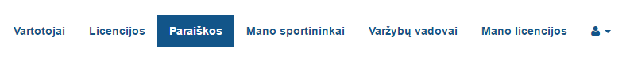
Toliau pasirenkame punktą “Pateikti paraišką varžyboms”.
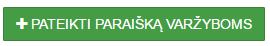
Pasirinkus šį punktą patenkame į varžybų paraiškos pildymo formą. Varžybų paraiškos formą susidaro iš šių pirminių dalių:
- Paraiška organizatoriaus licencijai gauti
- Pareiškėjo informacija
- Pristatymo informacija
- Ranka užpildytos popierinės paraiškos kopija (Neprivaloma)
Pareiškos informacija
Vartotojo tipas: Organizatorius
Šioje skiltyje matoma informacija:
- Varžybų pavadinimas - varžybų pavadinimas, kuriame draudžiama naudoti tokius žodžius kaip "Tarptautinis", "Pasaulinis", "Europos".
- Sporto šaka - sporto šaka, kurią galima pasirinkti iš pasirinkimų sąrašo
- Lyga - varžybų lyga
- Nuo - varžybų pradžios data
- Iki - varžybų pabaigos data
- Vieta - varžybų vieta, kurią vedant galima pasirinkti naudojant vietų pasiūlymus
- Varžybų etapas - pasirenkamas varžybų etapas, arba pasirenkama, kad varžybos yra vienkartinės
- Tipas - pasirenkamas varžybų tipas
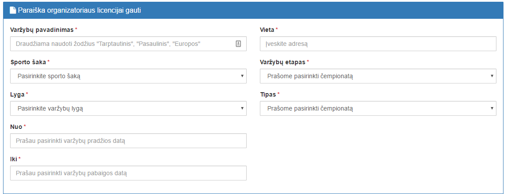
Pareiškėjo informacija
Vartotojo tipas: Organizatorius
Šioje skiltyje nurodoma visa pareiškėjo informacija, kurią galima matyti ir paskyros valdyme:
- LASF nario pavadinimas - organizatoriaus pavadinimas
- LASF nario adresas - organizatoriaus buveinės adresas
- Telefono nr. - organizatoriaus tel. nr.
- PVM mokėtojo kodas - organizatoriaus PVM mokėtojo kodas
- Sąskaitos nr. - organizatoriaus banko sąskaitos numeris
- Bankas - organizatoriaus bankas
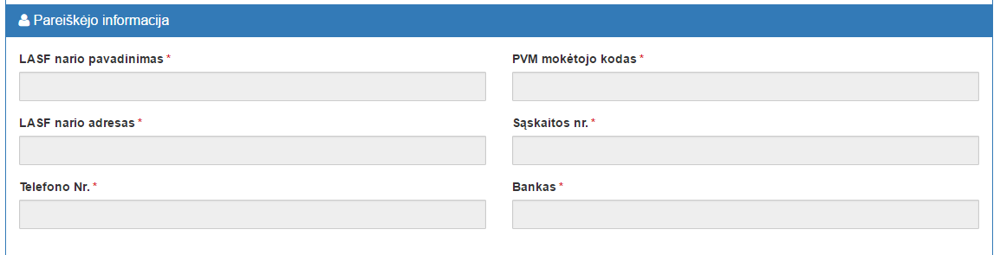
Pristatymo informacija
Vartotojo tipas: Organizatorius
Pristatymo informacijoje galima nurodyti adresą, į kurį bus pristatyta varžybų organizavimo paraiška. Galima pasirinkti, kad paraiškos atsiimti atvyks organizatorius į pačią LASF federaciją (Savanorių pr. 56, Kaunas), arba galima nurodyti LP Express terminalą, į kurį bus pristatyta paraiška.
Pasirinkus LP Express terminalą, reikia pasirinkti LP Express terminalą.
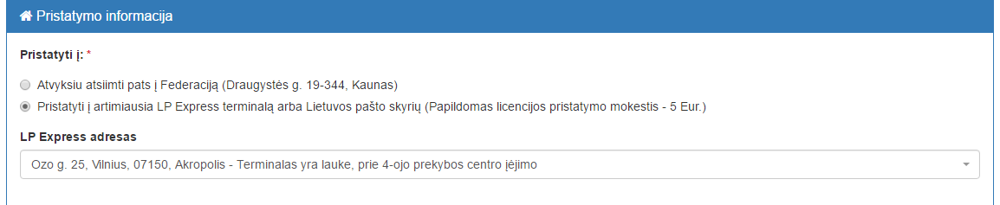
Ranka užpildytos paraiškos kopija
Vartotojo tipas: Organizatorius
Organizatoriui norint, jis gali pateikti paraiškos prašymo formą užpildyta ranka kaip priedą (šio failo įkėlimas nėra būtinas), ją tiesiog įkeldamas į sistemą.
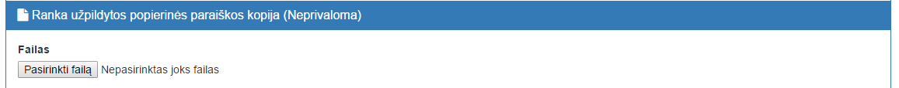
Sutikimas su taisyklėmis
Vartotojo tipas: Organizatorius
Norėdamas pateikti paraiškos prašymo formą, organizatorius privalo sutikti su LASF reglamentu ir taisyklėmis, taip pažymėdamas tam skirtą lauką.
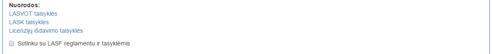
Paraiškos patvirtinimas ir generavimas
Vartotojo tipas: Sekretorė
Sekretorė mato visų paraiškų sąrašą.
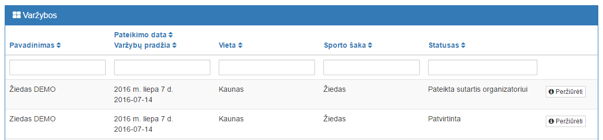
Pasirinkus norimas valdyti varžybas, sekretorė gali sutarties viduje ją patvirtinti, bei iš karto sugeneruoti sutartį,
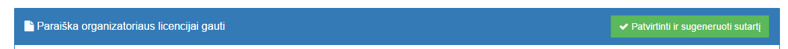
bei keisti pasirinktus sutarties elementus tekstinio redaktoriaus pagalba.
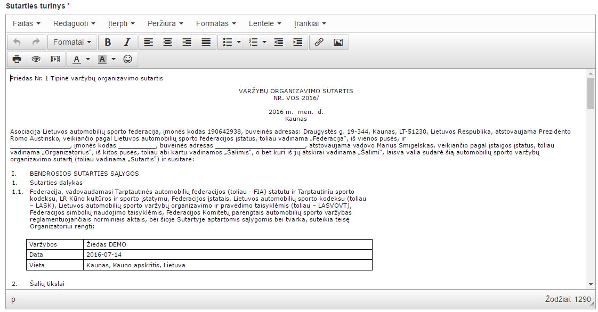
LASF prezidento pasirašytos sutarties įkėlimas
Vartotojo tipas: Sekretorė
Sekretorė gali įkelti į sistemą organizatoriaus pasirašytos sutarties failą, arba nuorodą į e-parašu pasirašytą dokumentą.
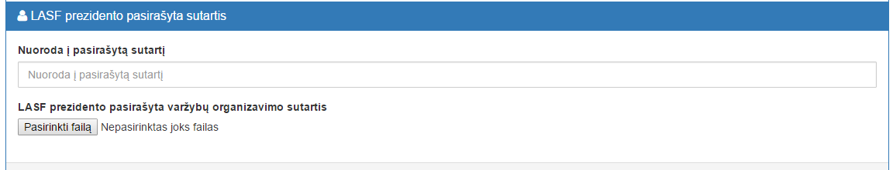
Sekretorei įkėlus nuorodą arba failą, mygtukas “Išsaugoti” tampa aktyvus.
Organizatoriaus pasirašytos sutarties įkėlimas
Vartotojo tipas: Organizatorius
Kai sekretorė įkelia į sistemą LASF prezidento pasirašytą sutartį, organizatorius privalo įkelti savo pasirašytą sutarties kopiją. Tai padaryti jis gali atsisiųsdamas sutartį, ją pasirašydamas ir įkeldamas sutarties kopiją į sistemą.
Organizatoriui įkėlus failą, mygtukas “Išsaugoti” tampa aktyvus.
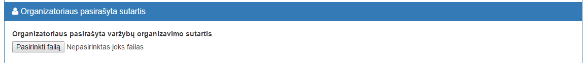
Sąskaitos įkėlimas
Vartotojo tipas: Buhalterė
Buhalterė gali įkelti sąskaitą, įkeldama sąskaitos dokumentą į sistemą. Įkėlus dokumentą į sistemą, varžybų organizatorius gaus pranešimą apie jam pateiktą sąskaitą el. paštu.
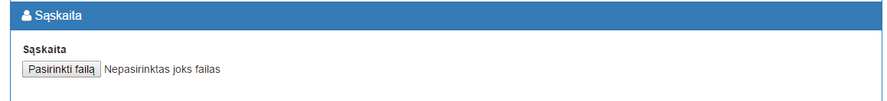
Sąskaitos šalinimas
Vartotojo tipas: Buhalterė
Esant reikalui, buhelterė gali šalinti į sistemą įkeltą sąskaitą, pasirinkdama prie sąskaitos failo esantį “x” simbolį.
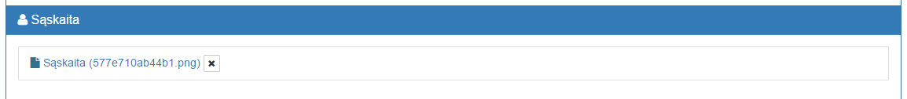
Sąskaitos apmokėjimo priminimas
Vartotojo tipas: Buhalterė
Varžybų organizatoriui neapmokėjus sąskaitos, buhalterė gali siųsti pakartotinį pranešimą apie sistemoje organizatoriaus laukiančią sąskaitą pasirinkus funkciją “Siųsti priminimą”.

Sąskaitos patvirtinimas
Vartotojo tipas: Buhalterė
Varžybų organizatoriui apmokėjus sąskaitą, buhalterė turi pasirinkti funkciją “Apmokėta” ir tada sąskaita bus pažymėta kaip apmokėta, bei bus leidžiama varžybų organizatoriui kelti į sistemą tolimesniam varžybų organizavimui reikiamus dokumentus.
Varžybų organizatoriaus dokumentų įkėlimas
Vartotojo tipas: Organizatorius
Papildomi varžybų nuostatai
Papildomus varžybų nuostatus galima įkelti į sistemą naudojantis tam skirta failo įkėlimo vieta.
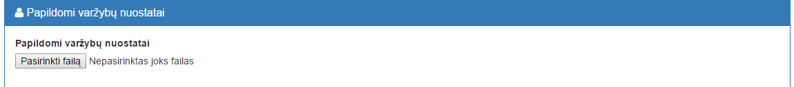
Saugos planas
Saugos planą galima įkelti į sistemą naudojantis tam skirta failo įkėlimo vieta.
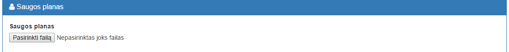
Trasos priėmimo aktas
Trasos priėmimo aktą galima įkelti į sistemą naudojantis tam skirta failo įkėlimo vieta.
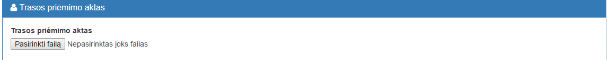
Varžbų draudimas
Varžybų draudimą galima įkelti į sistemą naudojantis tam skirta failo įkėlimo vieta.
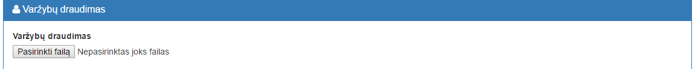
Kiti dokumentai
Kitus dokumentus galima įkelti į sistemą naudojantis tam skirta failo įkėlimo vieta.
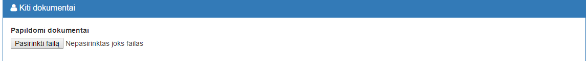
Varžybų vadovo pasirinkimas
Vartotojo tipas: Organizatorius
Varžybų organizatorius gali pasirinkti varžybų vadovą. Varžybų vadovas gali sutikti jam paskirtose varžybose, paraiškų sąraše pasirinkęs skiltį “Man priskirtos varžybos”.
Varžybų saraše galima keisti varžybų dalyvavimo statusą pasirinktoms varžyboms.
Varžybų komisaro parinkimas
Vartotojo tipas: Sekretorė
Norint priskirti varžybų komisarą, pirmiausia reikia jam sukurti paskyrą. Sukuriame vartotoją, kurio tipas “Teisėjas”.
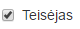
Tada šis naujas vartotojas privalo pateikti paraišką gauti I arba aukštesnės kategorijos teisėjo licenciją.
Po šių veiksmų vartotoją galima matyti varžybų komisarų valdymo modulyje.
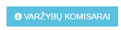
Sąraše galime pasirinkti komisarą ir priskirti sporto šakas, kuriose jis gali dirbti.
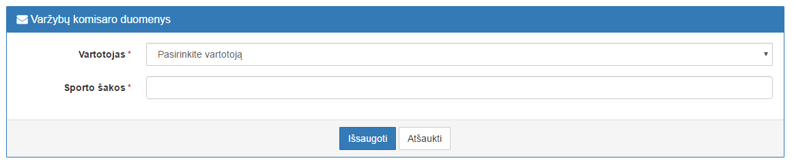
Atlikus šiuos veiksmus sporto komisaras bus matomas varžybų komisaro pasirinkimuose, kurie tampa aktyvūs po to, kai apmokamas varžybų organizavimo mokestis.
Saugos vadovo įvedimas
Vartotojo tipas: SVO komitetas
Saugos vadovą galima įvesti skiltyje “Paraiškos” pasirinkus “SVO viršininkų sąrašas”.

Sąraše galima įvesti, bei šalinti saugos vadus.

Atlikus šiuos veiksmus saugos vadovas bus matomas saugos vadovo pasirinkimuose, kurie tampa aktyvūs po to, kai apmokamas varžybų organizavimo mokestis.
Varžybų statusų šviesoforas
Varžybų šviesofore galima matyti kiek laiko liko iki reikiamų pateikti dokumentų pridavimo datos. Pagal nutylėjimą iš pradžių dokumentai būna balti su raudonu kontūru.
Patvirtinus dokumentą, jis pažymimas žaliai.
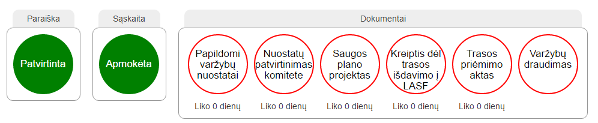
Varžybų vadovų įvedimas į sistemą
Vartotojo tipas: Sekretorė
Norint sukurti varžybų vadovą, pirmiausiai turime sukurti vartotoją, su varžybų vadovo role. Sukūrus vartotoją “Vartotojai” skiltyje pasirenkame modulį “Varžybų vadovai”.
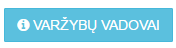
Atsidariusiame lange matovas varžybų vadovų sąrašas. Pasirinkus “Pridėti naują vadovą”, pateksite į vadovo pridėjimo vedlį, kuriame reikia pasirinkti vartotoją iš vadovų sąrašo, bei įvesti kategorijas, kuriose vadovas gali dirbti.
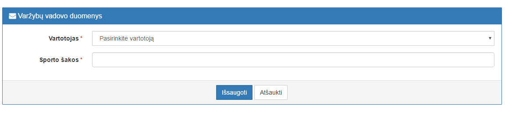
Atlikus šiuos veiksmus vadovas bus matomas vadovo pasirinkimuose, jei atitinka varžybų šaką. Laukas tampa aktyvūs po to, kai apmokamas varžybų organizavimo mokestis.
Varžybų laikų įvedimas
Vartotojo tipas: Sekretorė
Meniu skilyje "Paraiškos" paspaudus mygtuką "Laikų įvedimas", pateksite į laikų valdymo modulį.
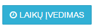
Laikų valdymo modulyje galima nurodyti, per kiek laiko nuo dokumentų pateikimo arba iki varžybų pradžios (pažymima varnele laukelyje "Data iki varžybų") reikia pateikti atitinkamus dokumentus, bei atliktis atitinkamus veiksmus. Visi nurodyti duomenys atvaizduojami paraiškoje esančiame "šviesafore".
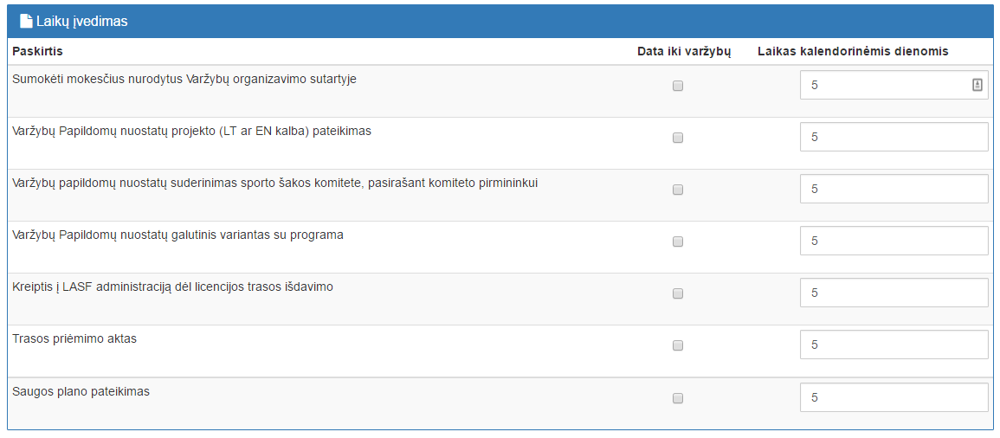
Varžybų datų įvedimas
Vartotojo tipas: Sekretorė
Meniu skilyje "Paraiškos" paspaudus mygtuką "Datų įvedimas", pateksite į datų valdymo modulį.
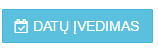
Datų valdymo modulyje galima nurodyti datas, kurios galima organizuoti varžybas. T.y. kurias datas galima pasirinkti teikiant varžybų organizavimo paraišką.
Norimas datas galima pridėti, bei jas šalinti.
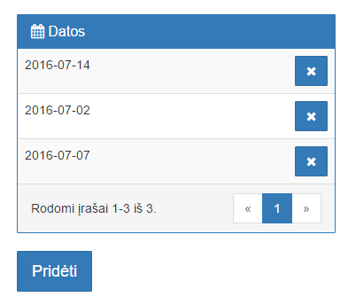
Varžybų kalendorius
Vartotojo tipas: Sekretorė
Meniu skilyje "Paraiškos", po varžybų sąrašu, administratorius ir sekretorė gali matyti varžybų kalendoriu su pažymėtomis dienomis, kuriomis vyksta varžybos.
Paspaudus ant pasirinktų varžybų būsite iš karto nukreipti į atitinkamų varžybų puslapį.
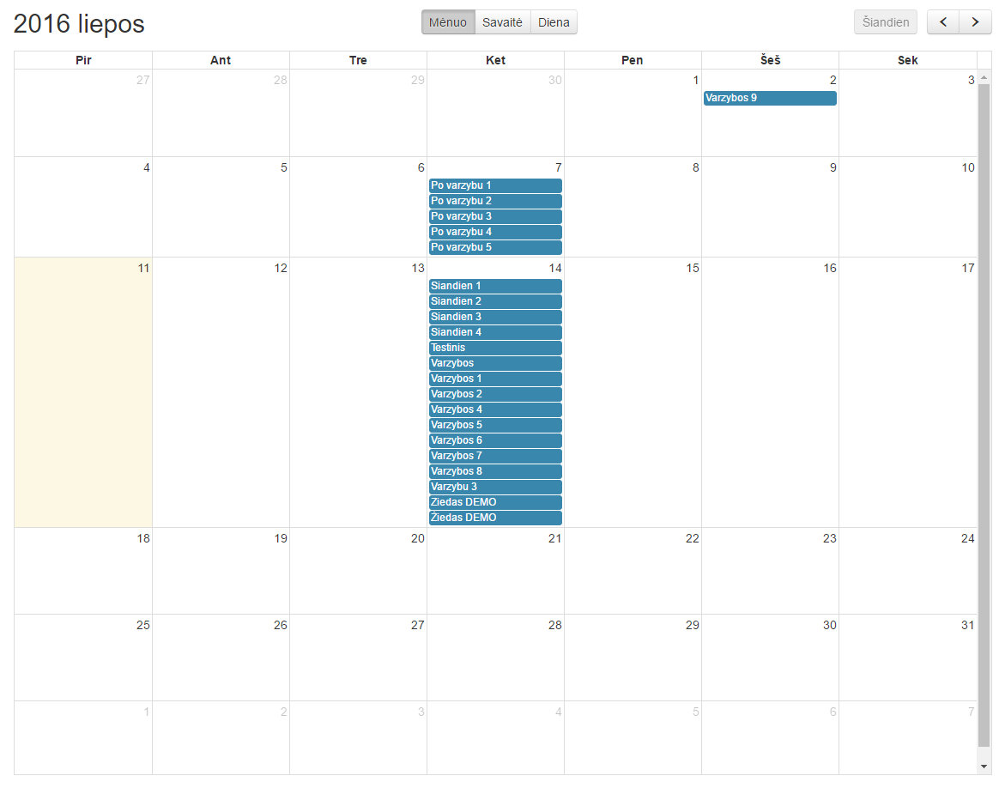